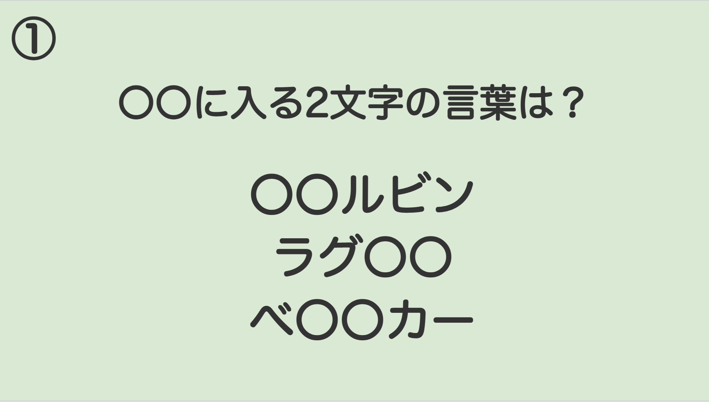
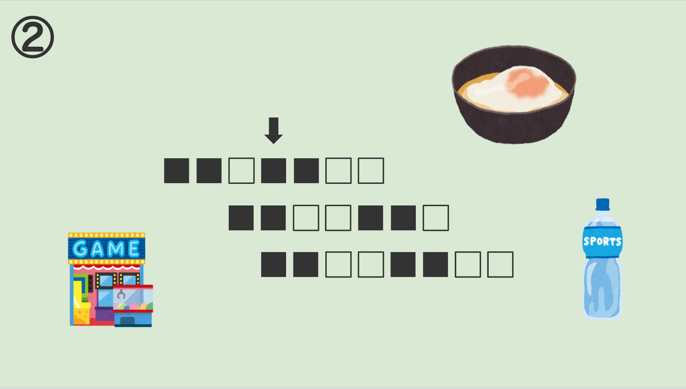
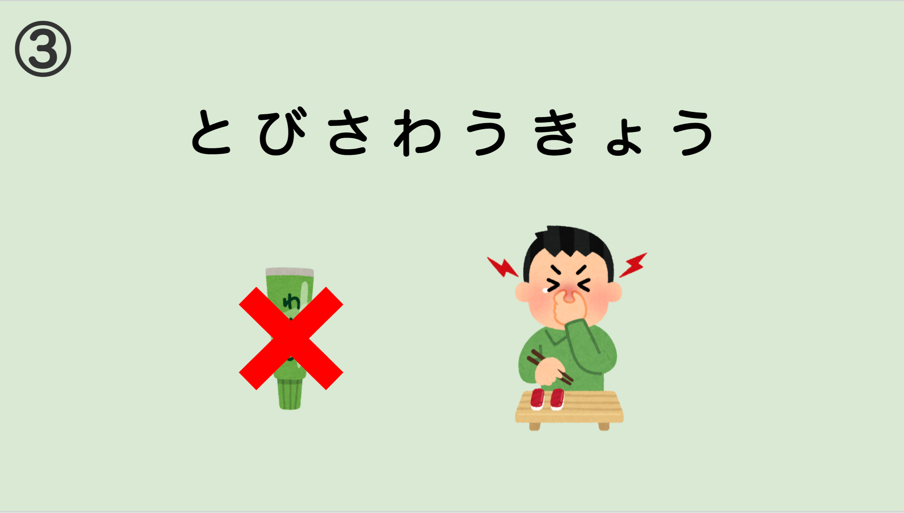
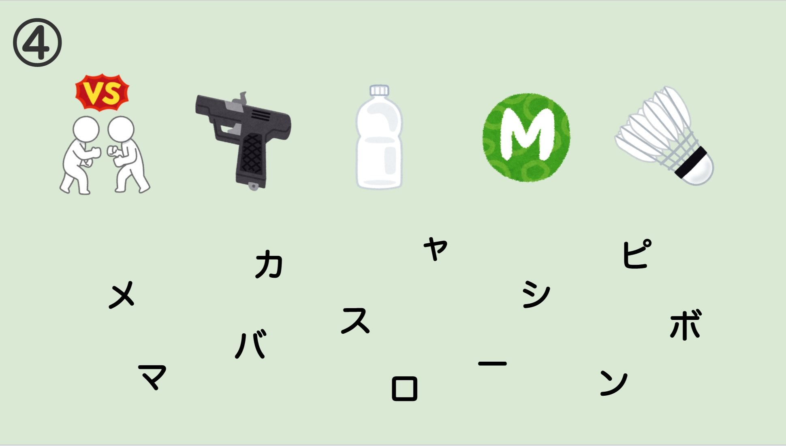

STAGE：1城に侵入しよう
オーロラ城には3つの塔がある。1つは海の塔、1つは田の塔、1つは畑の塔と呼ばれている。
これはお寿司三女神神話に出てくる、魚の居る海、米の採れる田んぼ、
醤油の原材料である大豆の採れる畑から付けられたものだ。
姫はその海の塔の最上階に住んでいる。そして庶民の間では、
そこからはこの街で1番美しい景色を観ることができるともっぱらの噂。
私も平和だった頃に一度だけ忍び込むことができたが、噂に違わぬ絶景だった。
また姫とかけがえのない一時を過ごすことを誓った。それがこんな雨の日になるとは。
私はとくにまずにも城へ侵入する必要があったので、姫と通った昔からある秘密の通路を使い城への侵入を試みた。
オーロラ城付近には、王立自然公園という保護区がある。
その公園では遊歩道から外ることは禁じられているが、そこから外れ、
獣道を進んだ先にある小鮭の滝の裏にある洞窟から秘密の通路にいけるのだ。
そして今、城の地下にある枯井戸の下まで来ることができたが、
残念ながら鉄のセキュリティハッチで閉じられていて開けることができない。
前にここを通った時は姫がパスワードを入力してくれたので、内容を聞きもしなかった自分を悔いている。
そのときに姫が渡してくれた「紙切れ」だけが頼りだ。
なぜ、「答え」じゃなく「クイズ」になっているのか、分からないが、あの姫のことだ、
「もし私に会いたくなったらこのクイズを、解いて下さいまし。
だって、その方が面白いと思いませんこと。あなたならきっと解けますわ。」
とでも、考えたのだろう。
下の画像を見て??????になにが入るか答えよう！
STAGE：2脱獄しよう
体が水に沈んだように重たい。どうやら気を失っていたようだ。
私は割れるように痛い頭をかかえながら、辺りを見回した。
岩盤がむき出しになり、竹と縄で作られた格子の扉がある。どうやらここは牢屋らしい。
壁に開いた小さな窓というか、穴からは暖かなオレンジの太陽の光が差し込んでいた。たぶん朝日か夕日だろう。
どれくらい寝てしまっていたんだろう。そう考えていると、大地が揺れた。そして耳をつんざくような音が轟いた。
どうやら戦争が始まってしまったらしい。
幸いにも鍵は、祖国で開発された「正しい順番に迷路を辿るもの」だ。
これなら何度か触ったことがある。今すぐにでも脱出しなければ。
STAGE：2赤い部分を通らずに暗号を入力しよう
STAGE：3姫君Shake！Shake！
あの動乱から、3日が経った。姫の足取りは掴めずにいたが、オーロラ小国南端の街であるアリストリアのアリストリア大聖堂に匿われているかもしれないと街の新聞記者から聴いた。すぐに特急列車に飛び乗りアリストリアまで来た。普段は観光客で賑わう街も閑散とした様子で戦禍の真っ只中であることが見て取れる。
早速情報集めをしようと、街のカフェやパブへ乗り込んでみたが、えびマヨ帝国の諜報員と思わしき人物や、オーロラ小国の軍人らしき屈強な男たちが沢山居たので、この近辺に王族や貴族が居るとみて間違いなさそうだ。
大聖堂はこの戦禍の中であっても毎週日曜日の礼拝は行われており、変わった素振りは見せない。人の出入りも激しく王族や貴族が居るとは思えない。でも、街にはスパイと軍人が異常なほど多く、街がざわついている。だからきっといるはずだと思うことしかできない。
そんなもどかしい日々がつづくなか、宿に帰り部屋に入ると、窓が開いたままになっていた。怪しく思ったので、ガンポーチから拳銃を取り出し、安全装置を外した。そして窓辺に近づいてみると、そこには月明かりの中で銀色に輝くネックレスがあった。
それは、平和だった頃に、サーモン姫と訪れた夏祭りの出店で買った、ハート型の二匹のイルカがキスをしているネックレスだった。
私は、きっとこの街に姫がいるに違いない。そう確信した。
そこから2回の夜が訪れるまでに私はあリストリア大聖堂への進入路を見つけ、ついに3回目の夜、侵入することにした。下水路からの侵入だったが、案外すんなり入ることができた。それだけ、警備にさく人員がないのかもしれないが、不思議に思う。目指すは、第2宝物庫。街の彫刻師が保管していた設計図には妙な箇所があった、あれはおそらく二世紀ほど前に主流だった金塊などを保管する秘密金庫の場所に違いない。人を匿うなら絶好の場所だ。確認する価値はあるだろう。
その後、何人かの警備をかいくぐり、宝物庫にたどり着くことができた。やはり、予想通り、からくり仕掛けの謎解きが施されていた。きっとこれを解けば、姫に会えるはず！
|  |  |
|  |  |